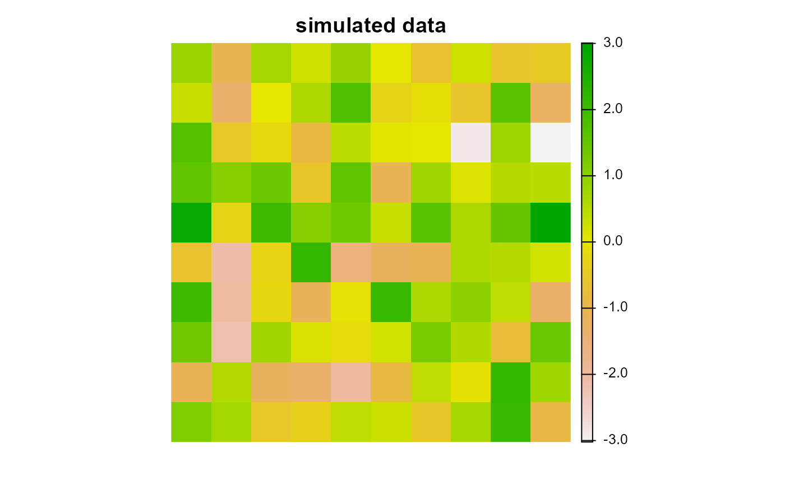

Simulate spatially auto-correlated data using Gaussian random fields.
Usage
simulate_data(x, n, scale, intensity, sd, transform)
# S3 method for class 'sf'
simulate_data(
x,
n = 1,
scale = 0.5,
intensity = 0,
sd = 1,
transform = identity
)
# S3 method for class 'SpatRaster'
simulate_data(
x,
n = 1,
scale = 0.5,
intensity = 0,
sd = 1,
transform = identity
)Arguments
- x
terra::rast()orsf::st_sf()object to use as a template.- n
integernumber of layers to simulate. Defaults to 1.- scale
numericparameter to control level of spatial auto-correlation in the simulated data. Defaults to 0.5.- intensity
numericaverage value of simulated data. Defaults to 0.- sd
numericstandard deviation of simulated data. Defaults to 1.- transform
functiontransform values output from the simulation. Defaults to theidentity()function such that values remain the same following transformation.
Value
A terra::rast() or sf::st_sf() object.
Examples
# \dontrun{
# create raster
r <- terra::rast(
ncols = 10, nrows = 10, xmin = 0, xmax = 1, ymin = 0, ymax = 1, vals = 1
)
# simulate data using a Gaussian field
x <- simulate_data(r, n = 1, scale = 0.2)
# plot simulated data
plot(x, main = "simulated data", axes = FALSE)
#> Error in plot.xy(xy, type, ...): invalid type passed to graphics function

# }